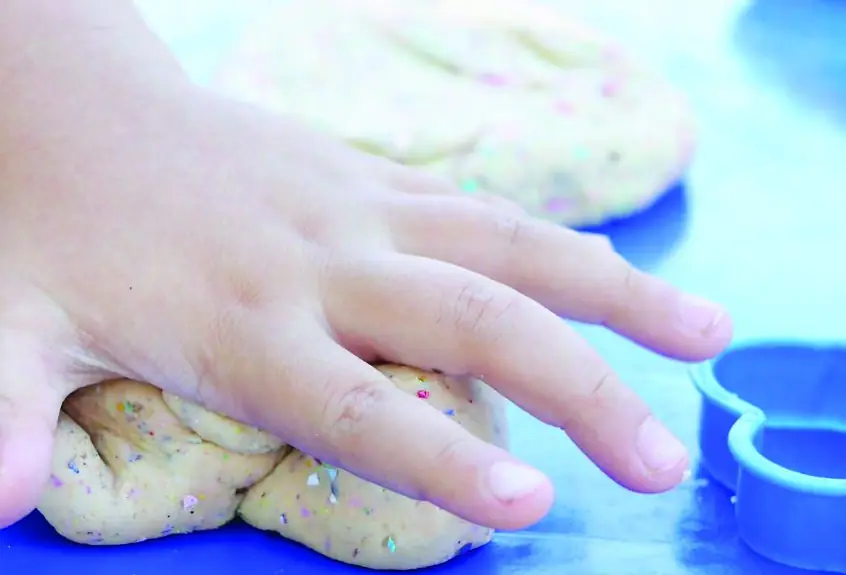

Educação Infantil
Um grande começo abre possibilidades para a vida inteira.
Desenvolvimento integral, formação, acompanhamento, recursos e documentação pedagógica para apoiar experiências significativas desde os primeiros anos.
Creches e pré-escolas da rede municipal, de zero a cinco anos.
Conversar sobre Educação Infantil